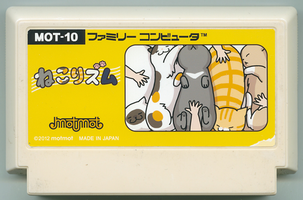

ねこりズム
小林ミキ／キャラクターデザイナー
コリをほぐせばニャンとなく！ 新感覚リズムゲームの登場！ サウンドに合わせて次々をやって来る猫達の疲れをとろう！ マッサージが上手ければ猫たちの警戒も取れて新しい猫たちが集まってきて大コンボのチャンスだよ！ 押せば気持ちの良さに猫たちも昇天しそうになるというピンポイントのツボ「ねこつぼ」を探しだしてボーナスポイントを手に入れよう！ 今日から君も猫専用マッサージ師!!